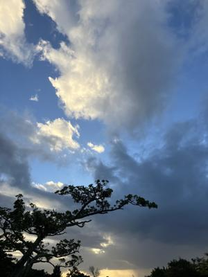

うるがいの話 ある日
最新: 屋外墓【うるがいの話 ある日】とは 一日だけのプログです
『うるがいの話』の最新一日だけのプログで、通信料が少なく経済的だ。カニの画像をクリックすると全ての日付が載る『うるがいの話』サイトを表示します
|
|
【うるがいの話】 うるがい(ｳﾙｶﾞｲ urugai)とは、『もずくがに』の名前でとても大きくなります。 |
|---|---|
|
|
【カミマヤーの話】 猫のことを方言でマヤーといいます。カミマヤー（kamimayaa）とは、神の猫のことです。 |
|
【たながぁの音楽】 たながぁ（ﾀﾅｶﾞｰ tanagaa）とは手長えびのことで、何種類かあり大きいのは車 エビぐらいになります。 |

|
【ぶながぁの話】 ぶながぁ(ﾌﾞﾅｶﾞｰ bunagaa)とは、赤い髪の毛、赤い身体、そして身長は１ｍ２０ｃｍ ぐらい、川の蟹を食べているの目撃された。場所は沖縄県国頭郡大宜味村のと ある村僕の隣近所に住んでいる爺さんから、聞いた話です。 |
|
|
【ギーマの話】 ギーマ(giima)とは、山原の里山に咲くスズランに似た、 花を付けます。実は食べられます、 気が付くと口の周りが紫になっています。 |
2025年11月08日 (土）屋外墓
15:44

平成五年吉日、名護市の郊外のさとうきび畑などの畑に囲まれた
場所に、実家の屋外墓が作られた。前年に父が亡くなり、納骨は
糸満にある門中墓に納骨をしていたが、一年を過ぎて遺骨をそこ
に移した。その翌年から、墓の正月である１月１６日（通常は旧
暦なのだが、実家の地域では新暦）には、屋外墓で残った家族で
集まった。そのうち、姉が、そして母親が亡くなりお墓に納骨し
た。
そして、お墓の登記が行われていないことが判明する。近くの人
達に尋ねると、田舎ではよくあることなので放置しておいたらと
言われる。ただ、墓の場所も分からないので三女、司法書士を利
用して調べてくれた。母親が亡くなってしばらくして、三女が実
は、次女の子供（故昭和６３年８月）がここに納骨されていると
東京にあるお寺の名刺を渡された。東京での研修が終了した日に
そのお寺から姪っ子（静香）のお骨を取り、翌日沖縄へ、そして
そのまま、名護の屋外墓へ納骨した。そして、その翌月に三女は
亡くなった。三女は、嫁ぎ先の門中墓に納骨された。
その翌年から、墓の正月へは私の家族だけになった。あ、姉の甥
っ子がいるけで、別々のタイミングで。去年父親が３３回忌を終
える。コンクリートの墓は、古くなりセメントが剝がれ始める。
そろそろ、永年供養へと那覇市相談に行く。が、骨壺を移動する
時は、お坊さんを頼まないといけない。だったら、毎度頼んでい
る母親の知己だった本部の伊豆味のお坊さんへ、永年供養をお願
いすべ、そのお坊さんに頼める間にと。そのお坊さん、意外と若
くて７７歳だと。
そして、昨日正式にお寺から『受入承諾証明書』を１１時３０分
に貰い、墓の所在地の管轄する名護市に改葬許可証を１４時００
分に入手した。なお、寺から名護市役所に行く間に、墓でのウサ
ギムンを那覇市内に惣菜屋『魚鉄』へ注文をする。そして、那覇
に替える前に、お昼ご飯としてパンを買う。お店へたどり着くの
に一時間ほど、かかった。最後は、電話で教えてもらった。
Pain de Kaito（パン・ド・カイト）名護本店
作りたてのホットドックを食べたが、生きていてこんなに美味し
いパンを食べたことがない！、と思った。来月の次女の命日にい
よいよ、お骨を移す。お寺を出てから名護市は、雨で高速道路は
激しい雨だった。那覇市は、家に着いたあとにわか雨が降った。